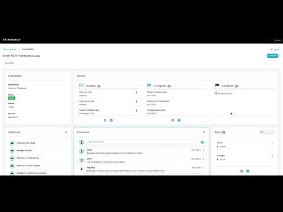

Case management – mention someone in comments and we will notify them
jBPM 7.5 brings in case comment notifications.
That means case participants can be notified directly when they are being mentioned in the case comments. What’s really worth noting is that this is completely integrated with case roles. In fact when you mention someone you mention by case role, there is no need to know who is actually assigned to the given role.
That enables smooth collaboration and plays nicely with dynamic nature of case instances and case role assignments.
Comment notifications
Comment notification processing is provided as case event listener that is NOT registered by default though it can be easily registered via deployment descriptor (as event listener).
This listener has three properties that are configurable but comes with defaults for easier setup
- sender (defaults to cases@jbpm.org)
- template (defaults to mentioned-in-comment)
- subject (defaults to You have been mentioned in case ({0}) comment)
- _CASE_ID_ – case id of the case the comment belongs to
- _AUTHOR_ – author of the comment
- _COMMENT_ – comment text (body)
- _COMMENT_ID_ – unique id of the comment
- _CREATED_AT_ – date when the comment was added
Notification publishers
Notifications are build as pluggable component and by default jBPM 7.5 comes with email based notification publisher. Notification publishers are discovered on runtime based on ServiceLoader mechanism, so as long as you have jbpm-workitems-email on class path then you have email based notification publisher.
Notification publisher interface (org.kie.internal.utils.NotificationPublisher) comes with three methods:
- publish notification with raw body
- publish notification built from a template
- indication if given publisher is active
Email notification publisher
Email based notification publisher uses two important components to do its work:
- java mail session that can either be retrieved from JNDI of application server (recommended as it hides the complexity needed to properly setup and secure communication with mail server) or based on property file
- user info implementation to resolve user ids to email addresses
- java mail session
- register mail session in JNDI via application server configuration and then point the JNDI name via system property so jBPM can pick it up
- -Dorg.kie.mail.session=java:jboss/mail/jbpmMailSession
- create email.properties file on the root of the class path with following properties
- mail.smtp.host
- mail.smtp.port
- mail.username
- mail.password
- mail.tls
- user info implementation is automatically retrieved from the environment via org.jbpm.runtime.manager.impl.identity.UserDataServiceProvider
To handle templates there is an extra component (TemplateManager) that allows to deal with html based templates managed with free marker to render actual body of the notifications.
Email templates
- org.jbpm.email.templates.dir – this property should point to an absolute file system path and must resolve to a directory.
- org.jbpm.email.templates.watcher.enabled – optionally you can enable watcher thread that will load updated, added or removed templates without the need to restart the server
- org.jbpm.email.templates.watcher.interval – when using watcher you can also control the poll interval for it, it defaults to 5 and can be changed with this property that represents number of seconds
Implementing your custom notification publisher
Since notification publishers are pluggable you might want to implement your own, e.g. SMS notification. To do that follow these simple steps and off you go:
- implement org.kie.internal.utils.NotificationPublisher your custom class with the mechanism chosen to send notification
- create file name org.kie.internal.utils.NotificationPublisher under META-INF/services and paste the fully qualified class name of your implementation
- usually it’s a good practice to implement isActive method with system property to allow to disable given publisher on runtime without a need to remove it from class path
- package everything in a jar file and place it on class path e.g. kie-server.war/WEB-INF/lib
See it in action


{kind=link}
{kind=link}